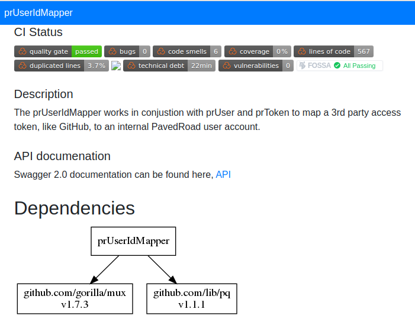
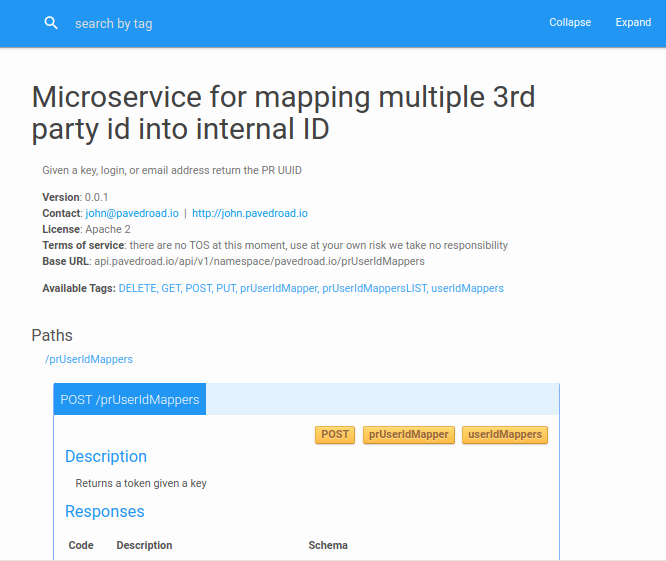
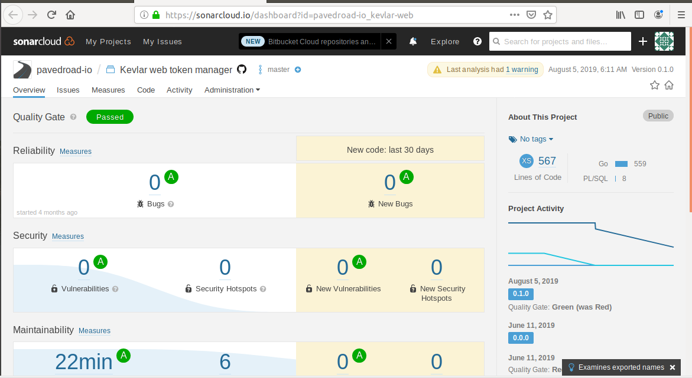
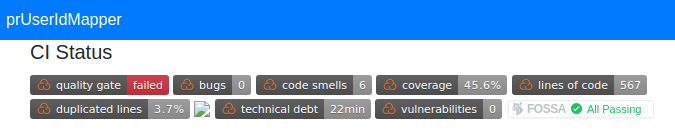
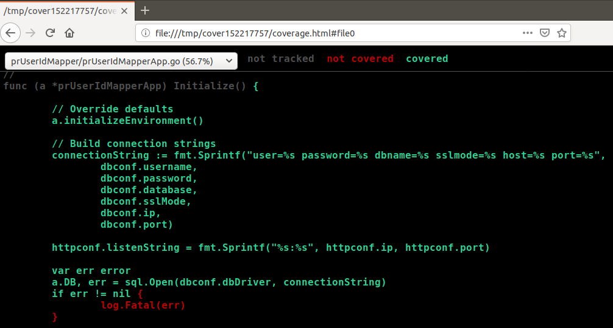
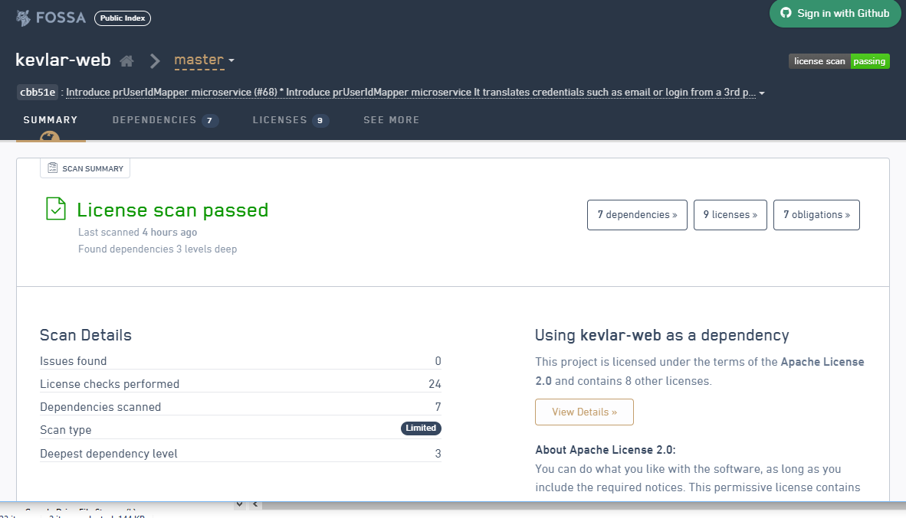

<!DOCTYPE html>
<html lang="en">
<head>
<!-- Global site tag (gtag.js) - Google Analytics -->
<script async src="https://www.googletagmanager.com/gtag/js?id=UA-146590394-1"></script>
<script>
  window.dataLayer = window.dataLayer || [];
  function gtag(){dataLayer.push(arguments);}
  gtag('js', new Date());

  gtag('config', 'UA-146590394-1');
</script>
	
    <title>PavedRoad.io</title>
    <!-- Meta -->
    <meta charset="utf-8">
    <meta http-equiv="X-UA-Compatible" content="IE=edge">
    <meta name="viewport" content="width=device-width, initial-scale=1.0">
    <meta name="description" content="">
    <meta name="author" content="">    
    <link rel="shortcut icon" href="../favicon.ico">
    <link href='https://fonts.googleapis.com/css?family=Lato:300,400,300italic,400italic' rel='stylesheet' type='text/css'>
    <link href='https://fonts.googleapis.com/css?family=Montserrat:400,700' rel='stylesheet' type='text/css'> 
    
	<!-- breadcrumb -->
	<link type="text/css" rel="stylesheet" href="../assets/css/pr.css"/>
	
	<!-- FontAwesome JS -->
    <script defer src="https://use.fontawesome.com/releases/v5.1.0/js/all.js" integrity="sha384-3LK/3kTpDE/Pkp8gTNp2gR/2gOiwQ6QaO7Td0zV76UFJVhqLl4Vl3KL1We6q6wR9" crossorigin="anonymous"></script>

    <!-- Global CSS -->
    <link rel="stylesheet" href="https://stackpath.bootstrapcdn.com/bootstrap/4.3.1/css/bootstrap.min.css" integrity="sha384-ggOyR0iXCbMQv3Xipma34MD+dH/1fQ784/j6cY/iJTQUOhcWr7x9JvoRxT2MZw1T" crossorigin="anonymous">

    <!-- Plugins CSS -->    
    <link rel="stylesheet" href="../assets/plugins/prism/prism.css">
    <!-- Theme CSS -->  
    <link id="theme-style" rel="stylesheet" href="../assets/css/theme-1.css">
    <!-- GitHub Button -->
    <script async defer src="https://buttons.github.io/buttons.js"></script> 
</head> 

<body data-spy="scroll">

    <!---//Facebook button code-->
    <div id="fb-root"></div>
    <script>(function(d, s, id) {
      var js, fjs = d.getElementsByTagName(s)[0];
      if (d.getElementById(id)) return;
      js = d.createElement(s); js.id = id;
      js.src = "//connect.facebook.net/en_US/sdk.js#xfbml=1&version=v2.0";
      fjs.parentNode.insertBefore(js, fjs);
    }(document, 'script', 'facebook-jssdk'));</script>
    
    <!-- ******HEADER****** --> 
    <header id="header" class="header">  
        <div class="container">            
            <h1 class="logo float-left">
                <a href="/">
                    <span class="logo-title">PavedRoad.io</span>
                </a>
            </h1><!--//logo-->              

            <nav id="main-nav" class="main-nav navbar-expand-md float-right" role="navigation">
                
                <button class="navbar-toggler" type="button" data-toggle="collapse" data-target="#navbar-collapse">
                    <span class="sr-only">Toggle navigation</span>
                    <span class="icon-bar"></span>
                    <span class="icon-bar"></span>
                    <span class="icon-bar"></span>
                </button><!--//nav-toggle-->
                           
                 <div class="navbar-collapse collapse" id="navbar-collapse">
                    <ul class="nav navbar-nav">
                        <li class="nav-item sr-only"><a class="nav-link" href="/">Home</a></li>
                        <li class="nav-item"><a class="nav-link" href="/#about">About</a></li>
                        <li class="nav-item"><a class="nav-link" href="/#features">Features</a></li>
                        <li class="nav-item"><a class="nav-link" href="/#docs">Documentation</a></li>
                        <li class="nav-item dropdown">
                          <a class="nav-link dropdown-toggle" data-toggle="dropdown"
                             href="#" role="button" aria-haspopup="true" aria-expanded="false">Guides</a>
                          <div class="dropdown-menu">
                            <a class="dropdown-item" href="../devKitsLanding.html">DevKits</a>
                            <a class="dropdown-item" href="../cicdLanding.html">CI/CD</a>
                            <a class="dropdown-item" href="../operationsLanding.html">Operations</a>
                            <a class="dropdown-item" href="../insightsLanding.html">Insights</a>
                          </div>
                        </li>
                        <li class="nav-item"><a class="nav-link" href="/#license">License</a></li>                        
                        <li class="nav-item last"><a class="nav-link" href="/#contact">Contact</a></li>
                    </ul><!--//nav-->
                </div><!--//navabr-collapse-->
            </nav><!--//main-nav-->
        </div>
    </header><!--//header-->
    
    <!-- ******ABOUT****** --> 

    <section id="devKitTraining" class="about section bg-light">
	
	<nav aria-label="breadcrumb">
     <ul class="breadcrumb bg-light">
       <li class="breadcrumb-item"><a href="/">Home</a></li>
       <li class="breadcrumb-item"><a href="../Tooling.html">GoLang Quick Start</a></li>
       <li class="breadcrumb-item active" aria-current="page">Go DevKit</li>
     </ul>
   </nav>
	
	
    <!--  <div class="container" style="margin-top: 45px;">
	  
        <span class="sub-title" style="font-size: 25px; virtical-align: text-top;"><span class="container" style="margin-top: 45px;">
		<span class="sub-title" style="font-size: 25px; virtical-align: text-top;">DevKit</span></span></span><span class="container" style="margin-top: 45px;">
		<span class="sub-title" style="font-size: 25px; virtical-align: text-top;"></span></span>
		
		-->
		
		
		  <div class="container" style="margin-top: 45px;">
        <h3 class="sub-title text-left" style="margin-top: 5; margin-bottom: 5px;">
        
          DevKit 
        <//h3>

		
		
        <h4 style="margin-top: 10px;">Overview</h4>
        <p dir="ltr">Go is an open source programming language from Google with the first stable 
        release in 2011. The Go source code can be found in <a href="https://github.com/golang/go" target="_blank">
          Github</a>. Go was built to resemble a simplified version of the C programming language. 
        Go reduces the complexity that languages like C known for being difficult to work with and not 
        secure, while Ruby is safe but slower and has many dependencies, Java which became too complex 
        and verbose. Go removes these obstacles for ease of programming. Go is being used by over half 
        of a million programmers in the <a href="https://research.swtch.com/gophercount" target="_blank">
          Go community</a>. It compiles at the machine level. </p>
        <p dir="ltr">
          Go was created at Google in 2007 by Robert Griesemer, Rob Pike, and Ken Thompson.
        </p>

        <h4 style="margin-top: 15px;">Subjects</h4>
        <div class="accordion" id="goAccording">
          <div class="card" style="width: 30rem;">
            <div class="card-header" id="pr-tools">
              <h2 class="mb-0">
                <button type="button" class="btn btn-link collapsed" 
                  data-toggle="collapse" data-target="#collapseOne">
                  PavedRoad Enhancements
                </button>
              </h2>
            </div>
            <div id="collapseOne" class="collapse show" aria-labelledby="pr-tools" data-parent="#goAccording">
                <div class="card-body">
                  <p><a class="scrollto" href="#pr-go-env">Environment defaults & configuration</a></p>
                  <p><a class="scrollto" href="#pr-go-make">Makefile</a></p>
                  <p><a class="scrollto" href="#pr-go-auto-doc">Auto documentation</a></p>
                  <p><a class="scrollto" href="#pr-go-sonarcloud">Sonarcloud</a></p>
                  <p><a class="scrollto" href="#pr-go-test-coverage">Test coverage</a></p>
                  <p><a class="scrollto" href="#pr-go-github">GitHub integration</a></p>
                  <p><a class="scrollto" href="#pr-go-skaffold">Skaffold integration</a></p>
                  <p><a class="scrollto" href="#pr-go-FOSSA">FOSSA license scanning</a></p>
                  <p><a href="../kubernetes/microk8sDevKit.html">Kubernetes + addons</a></p>
                </div>
            </div>
          </div> <!-- end class=card -->

          <div class="card">
            <div class="card-header" id="go-working-with">
              <h2 class="mb-0">
                <button type="button" class="btn btn-link" data-toggle="collapse" 
                  data-target="#collapseTwo">
                  Daily Go
                </button>									
              </h2>
            </div>
            <div id="collapseTwo" class="collapse" aria-labelledby="go-working-with" 
              data-parent="#goAccording">
              <div class="card-body">
                <p><a href="#go-commands">Go Commands</a></p>
                <p><a href="#go-tools">Go Tools</a></p>
                <p><a href="#go-testing">Go Testing</a></p>
              </div>
            </div>
        </div> <!-- end class=accordion -->
        <div class="card">
            <div class="card-header" id="templates">
                <h2 class="mb-0">
                    <button type="button" class="btn btn-link collapsed" data-toggle="collapse" 
                      data-target="#collapseThree">
                    Working with templates
                    </button>
                </h2>
            </div>
            <div id="collapseThree" class="collapse" aria-labelledby="serverless" data-parent="#goAccording">
                <div class="card-body">
                  <p><a href="#go-microservices">Microservices</a></p>
                  <ul>
                    <a href="#go-ms-data">
                      <li>Data manager</li>
                    </a>
                  </ul>
                  <ul>
                    <a href="#go-ms-gateway">
                      <li>API Gateway</li>
                    </a>
                  </ul>
                  <ul>
                    <a href="#go-ms-aggregator">
                      <li>Aggregator</li>
                    </a>
                  </ul>
                  <ul>
                    <a href="#go-ms-ux">
                      <li>User Interface Component</li>
                    </a>
                  </ul>
                  <ul>
                    <a href="#go-ms-service">
                      <li>Service</li>
                    </a>
                  </ul>
                  <p><a href="#go-CRD">Custom Resource Controller</a></p>
                  <p><a href="#go-faas">Serverless</a></p>
                </div>
            </div>
        </div>
        <div class="card">
            <div class="card-header" id="learning">
                <h2 class="mb-0">
                    <button type="button" class="btn btn-link collapsed" 
                      data-toggle="collapse" data-target="#collapseFour">
                      Learning Center
                    </button>
                </h2>
            </div>
            <div id="collapseFour" class="collapse" aria-labelledby="learning" data-parent="#goAccording">
                <div class="card-body">
                  <p><a href="goDocumentation.html" target="_blank">Documentation</a></p>
                  <p><a href="goVideo.html" target="_blank">Videos</a></p>
                  <p><a href="goTutorials.html" target="_blank">Tutorials</a></p>
                </div>
            </div>
        </div>
    </div>

    <h4 style="margin-top: 20px;">PavedRoad enhancements</h4>

      <div class="container" style="margin-top: 20px;">
        <h5>Environment</h5>
        <a class="scrollto" id="pr-go-env" name="pr-go-env"></a>
        <h6>.bashrc</h6>
        <div>
        The following environment variables are add or appended in your 
        $HOME/.bashrc file
        </div>
        <table class="table table-sm">
          <caption>PavedRoad environment variables</caption>
          <thead>
            <col width="25%">
            <col width="75%">
            <tr>
              <th scope="col">Variable</th>
              <th scope="col">Description</th>
            </tr>
          </thead>
          <tr>
            <td>PATH</td>
            <td><ul>
                <li>$HOME/bin is added for PR utilities</li>
                <li>/usr/local/go/bin is added for go</li>
              </ul>
            </td>
          </tr>
          <tr>
            <td>EDITOR</td>
            <td>is set to vim</td>
          </tr>

          <tr>
            <td>OPENFASS_PASSWORD</td>
            <td>pavedroad</td>
          </tr>

          <tr>
            <td>OPENFASS_URL</td>
            <td>is set to http://localhost:31112</td>
          </tr>

        </table>

      </div>

      <div class="container" style="margin-top: 20px;">
        <h5>Makefile</h5>
        <a class="scrollto" id="pr-go-make" name="pr-go-make"></a>
        <table class="table table-sm">
          <caption>Makefile options</caption>
          <thead>
            <col width="25%">
            <col width="75%">
            <tr>
              <th scope="col">Command</th>
              <th scope="col">Description</th>
            </tr>
          </thead>
          <tr>
            <td>make</td>                
            <td>Test, compile, and deploy microservice</td>
          </tr>
          <tr>
            <td>make check</td>
            <td>Run all tests, code coverage, and linters</td>
          </tr>
          <tr>
            <td>make generate</td>
            <td>Enforce dependencies, generate dependency graph</td>
          </tr>
          <tr>
            <td>make compile</td>
            <td>Compile the binary and docker container</td>
          </tr>
          <tr>
            <td>make show-coverage</td>
            <td>Open a browser window showing code highlighed by coverage</td>
          </tr>
          <tr>
            <td>make show-test</td>
            <td>Open a browser window showing sonarcube test report</td>
          </tr>
          <tr>
            <td>make start</td>
            <td>Start a copy of the microservice locally</td>
          </tr>
          <tr>
            <td>make stop</td>
            <td>Stop local microservice</td>
          </tr>
          <tr>
            <td>make clean</td>
            <td>Remove executables and run go-clean</td>
          </tr>
          <tr>
            <td>make install</td>
            <td>Install microserice in /usr/local/bin</td>
          </tr>
          <tr>
            <td>make kompose</td>
            <td>Generate Kubernetes manifests</td>
          </tr>
          <tr>
            <td>make fmt</td>
            <td>Enforce go coding standard</td>
          </tr>
          <tr>
            <td>make simplify</td>
            <td>Simplify go code</td>
          </tr>
        </table>
      </div>

      <div class="container" style="margin-top: 20px;">
        <h5>Auto documentation</h5>
        <a class="scrollto" id="pr-go-auto-doc" name="pr-go-auto-doc"></a>
        <h6>template.html</h6>
        <div>
        PavedRoad follows the practice that the code is the documentation.
        To that end, we use go-doc and swagger inline with the code to auto 
        generate documentation.
        </div>
        <div>
        A template.html is generated in the doc/ directory, where "template",
        is the name of your service.  That file includes links to two 
        auto generated artifacts:
        <ul>
          <li><span>template.png: Is an auto generated graph of the microservices dependencies</li>
          <li><span>api.html: Is an auto generated Swagger 2.0 API documentation
        </ul>
        </div>

        <h6>Sample template.html</h6>
        <div style="margin-bottom: 15px;">
          
        </div>
        
        <h6>Sample api.html</h6>
        <div style="margin-bottom: 15px;">
          
        </div>
        
        <h6>Swagger 2.0</h6>
        <div>
          Documentation is embedded in the code using comments that contain <code>swagger:tag-name</code>.  For example, the following example uses the "swagger:meta" tag.  go-swagger markup supports the following tags:
        </div>
        <ul>
          <li>swagger:meta</li>
          <li>swagger:route</li>
          <li>swagger:parameters</li>
          <li>swagger:response</li>
          <li>swagger:operation</li>
          <li>swagger:model</li>
          <li>swagger:allOf</li>
          <li>swagger:strfmt</li>
          <li>swagger:discriminated</li>
          <li>swagger:ignore</li>
        </ul>

        <div>
          The file <code>templateDoc.go</code> contains the summary information 
          for your code.
        </div>
        <pre>
// Microservice for mapping multiple 3rd party id into internal ID
//
// Given a key, login, or email address return the PR UUID
//
// Terms Of Service:
//
// there are no TOS at this moment, use at your own risk we take no responsibility
//
//     Schemes: http, https
//     Host: api.pavedroad.io
//     BasePath: /api/v1/namespace/pavedroad.io/prUserIdMappers
//     Version: 0.0.1
//     License: Apache 2
//     Contact: John Scharber<john@pavedroad.io> http://john.pavedroad.io
//
//     Consumes:
//     - application/json
//
//     Produces:
//     - application/json
//
// swagger:meta
        </pre>
        <div>
          The file <code>templateApp.go</code> will define your routes as 
          shown in the example below.  The route takes an HTTP verb and 
          an end-point.  Those are followed by a tag for grouping and 
          a reference to the function that it calls
        </div>
        <pre>
// getUserIdMappers swagger:route GET /prUserIdMappersLIST userIdMappers getUserIdMappers
//
// Returns a list of tokens
//
// Responses:
//    default: genericError
//        200: tokenList
func (a *prUserIdMapperApp) getUserIdMappers(w http.ResponseWriter, r *http.Request) {
  UserIdMapper := prUserIdMapper{}
        </pre>
        <div>
          The file <code>templatModel.go</code> contains responses, and swagger models.
        </div>
        <pre>
// Return a basic message as json in the body
//
// swagger:response statusResponse
type statusResponse struct {
  // in: body
  msg error `json:"message"`
}
        </pre>
        <div>Example model</div>
        <pre>
// prUserIdMapper data structure for mapper storage
// It is used to map a 3rd party credential to an internal UUID
//
// swagger:model userIdMapper
type prUserIdMapper struct {
  // API versions
  //
  // required: true
  APIVersion string `json:"apiVersion"`

  // Object verions
  //
  // required: true
  ObjVersion string `json:"objVersion"`

  // Type of object
  //
  // required: true
  Kind       string `json:"kind"`

  // 3rd party credential: email, login, or key
  //
  // required: true
  Credential string `json:"login"`

  // PR user ID
  //
  // required: true
  UserUUID   string `json:"userUUID"`

  // Number of times this user has logged in
  //
  // readonly
  LoginCount int    `json:"loginCount"`

  // Time this record was creaetd
  //
  // readonly
  Created    string `json:"created,ignoreempty"`

  // Time this record was last updated
  //
  // readonly
  Updated    string `json:"updated,ignoreempty"`

  // Is this an active user true or false, default true
  //
  // required: false
  Active     string `json:"active"`
}
        </pre>
        <div>
          The following links provide more details and examples for swagger 
          and the tools we use:
        </div>
        <ul>
          <li>
            <a href="https://spin.atomicobject.com/2018/08/30/swagger-api-intro/">
            Introduction to Swagger
            </a>
          </li>
          <li>
            <a href="https://github.com/go-swagger/go-swagger">
            go-swagger: Swagger generation for Go 
            </a>
          </li>
          <li>
            <a href="https://github.com/go-swagger/go-swagger/tree/master/fixtures/goparsing/petstore">
              Petstore example go markup
            </a>
          </li>
            <li>
              <a href="https://twskj.github.io/pretty-swag/">
                Pretty-swag: swagger json > html
              </a>
            </li>
            <li>
              <a href="https://godoc.org/github.com/fluhus/godoc-tricks">
                Go doc tricks
              </a>
            </li>
        </ul>

      </div>

      <div class="container" style="margin-top: 20px;">
        <h5>Sonarcloud</h5>
        <a class="scrollto" id="pr-go-sonarcloud" name="pr-go-sonarcloud"></a>
        <div>
          <h6>artifacts directory</h6>
          Contains build artifacts produced by sonarlcloud scanner, 
          linters, and code coverage.
        </div>
        <div>
          <h6>sonarcloud.sh</h6>
          Executes the sonarcloud scanner and uploads the results.
          You will see output similar to the sample provided below when
          a build is executed.
          <pre>
INFO: Scanner configuration file: /home/user/eng/sonarcloud/sonar-scanner-3.3.0.1492-linux/conf/sonar-scanner.properties
INFO: Project root configuration file: /home/user/eng/kevlar-web/dev/services/src/prToken/sonar-project.properties
INFO: SonarQube Scanner 3.3.0.1492
INFO: Java 1.8.0_121 Oracle Corporation (64-bit)
INFO: Linux 4.15.0-55-generic amd64
INFO: User cache: /home/user/.sonar/cache
INFO: SonarQube server 8.0.0
INFO: Default locale: "en_US", source code encoding: "UTF-8" (analysis is platform dependent)
...
INFO: ANALYSIS SUCCESSFUL, you can browse https://sonarcloud.io/dashboard?id=pavedroad-io_kevlar-web
INFO: Note that you will be able to access the updated dashboard once the server has processed the submitted analysis report
INFO: More about the report processing at https://sonarcloud.io/api/ce/task?id=AWxh5-q7iOX_Qgt-OYK0
INFO: Analysis total time: 24.533 s
INFO: ------------------------------------------------------------------------
INFO: EXECUTION SUCCESS
INFO: ------------------------------------------------------------------------
INFO: Total time: 1:15.934s
INFO: Final Memory: 46M/560M
INFO: ------------------------------------------------------------------------
          </pre>
        </div>
        <div style="margin-bottom: 15px;">
          <h6>Make file support</h6>
          Issuing the command <code>make show-coverage</code> will launch
          your browser and bring up sonarcube test reports.
        </div>
        <div margin-bottom: 15px;">
          
        </div>
        <!-- <div style="margin-bottom: 15px;">
          <h6>doc/templateDoc.html</h6>
          Build bagges are for sonar cloud and FOSSA license scanning are
          added to the CI section
          
        </div> -->
      </div>

      <div class="container" style="margin-top: 20px;">
        <h5>Test coverage</h5>
        <a class="scrollto" id="pr-go-test-coverage" name="pr-go-test-coverage"></a>
        <div>
          <h6>Go test coverage</h6>
          <div style="margin-bottom: 15px;">
          Go test coverage is configured by default.  Test coverage output
          is stored in the artifacts directory.  To view the test coverage 
          report, enter <code>make show-coverage</code> on the command line.
          Alternatively, you can run <code>go tool cover -html=artifacts/coverage.out</code>
          </div>
          
          <div>
          
            
          </div>
        </div>
      </div>

      <div class="container" style="margin-top: 20px;">
        <h5>GitHub integrations</h5>
        <a class="scrollto" id="pr-go-github" name="pr-go-github"></a>
        Currently, we integrate the following:
        <ul>
          <li>FOSSA license scanning</li>
          <li>Sonar Cloud</li>
        </ul>
      </div>

      <div class="container" style="margin-top: 20px;">
        <h5>Skaffold integrations</h5>
        <a class="scrollto" id="pr-go-skaffold" name="pr-go-skaffold"></a>
        During the `make compile` phase of a build several things happen:
        <ul>
          <li>After the go binary is built, a copy is made in the local directory.  The local binary is necessary for building the docker image.  Docker expects all files to be in the current build context.  The build context is the directory passed to the docker daemon.  In this case that is "." for the current working directory.</li>
          <li>It then issues the `skaffold run` command.  This command builds the docker image, tags it with the current git commit-id, executes any specified container-tests, and then pushes the deployment to the local microk8s cluster.  This requires enabling the microk8s repository service with microk8s.enable repository.</li>
        </ul>

Sample output:
<pre>
<code>skaffold run</code>
Generating tags...
 - localhost:32000/prtoken -> localhost:32000/prtoken:8b1064b-dirty
Tags generated in 11.022957ms
Starting build...
Building [localhost:32000/prtoken]...
Sending build context to Docker daemon   14.8MB
Step 1/11 : FROM golang:latest
 ---> 9fe4cdc1f173
Step 2/11 : LABEL "vendor": "PavedRoad.io"       "microservice": "prToken"       "description": "Stores OAUTH access tokens"       "version": "0.0.1"       "env": "dev"
 ---> Using cache
 ---> 71daff69908f
Step 3/11 : MAINTAINER "support@pavedroad.io"
 ---> Using cache
 ---> 5d30e621e516
Step 4/11 : ENV ms prToken
---> Using cache
 ---> fdfa5c9ea833
Step 5/11 : ENV kevlar /kevlar
 ---> Using cache
 ---> 647b5d1d300b
Step 6/11 : ENV kevlarbin $kevlar/$ms
 ---> Using cache
 ---> ab273d45fae4
Step 7/11 : RUN mkdir ${kevlar}
 ---> Using cache
 ---> 90f18ba0f5e8
Step 8/11 : WORKDIR ${kevlar}
 ---> Using cache
 ---> 85644e19edda
Step 9/11 : COPY $ms $kevlar
 ---> Using cache
 ---> Using cache
 ---> 7d62287c7b07
Step 10/11 : EXPOSE 8081
 ---> Using cache
 ---> 6fc1d9521224
Step 11/11 : CMD ["/bin/sh", "-c", "$kevlarbin"]
 ---> Using cache
 ---> f50a616e1f70
Successfully built f50a616e1f70
Successfully tagged localhost:32000/prtoken:8b1064b-dirty
The push refers to repository [localhost:32000/prtoken]
8bb9d43faf58: Preparing
6ca26f3cae44: Preparing
39ba5a88a3c4: Preparing
56df4f4c91ea: Preparing
510e5f32af35: Preparing
2c8d31157b81: Preparing
7b76d801397d: Preparing
f32868cde90b: Preparing
0db06dff9d9a: Preparing
2c8d31157b81: Waiting
7b76d801397d: Waiting
f32868cde90b: Waiting
0db06dff9d9a: Waiting
56df4f4c91ea: Layer already exists
510e5f32af35: Layer already exists
8bb9d43faf58: Layer already exists
6ca26f3cae44: Layer already exists
39ba5a88a3c4: Layer already exists
2c8d31157b81: Layer already exists
7b76d801397d: Layer already exists
f32868cde90b: Layer already exists
0db06dff9d9a: Layer already exists
8b1064b-dirty: digest: sha256:358438715d27deec4962dc38f02721c1a86eae0563507e027435742335a2ff8b size: 2214
Build complete in 624.922056ms
starting deploy...
kubectl client version: 1.14
deployment.extensions/prtoken configured
service/prtoken configured
persistentvolumeclaim/roach-ui-claim0 configured
deployment.extensions/roach-ui configured
service/roach-ui configured
Deploy complete in 2.144968707s
You can also run [skaffold run --tail] to get the logs
</pre>
      </div>

      <div class="container" style="margin-top: 20px;">
        <h5>FOSSA license scanning</h5>
        <a class="scrollto" id="pr-go-FOSSA" name="pr-go-FOSSA"></a>
        The free version of FOSSA license scanning is configured by default.
        A badge is added to the read me document.  Click on that link will
        take you to the details results of the most recent scan.
      </div>
      

    <h4 style="margin-top: 20px;">Daily Go</h4>
      <div class="container" style="margin-top: 20px;">
        <h5>Go commands</h5>
        <a class="scrollto" id="go-commands" name="go-commands"></a>
		  <h6>Basic commands to know</h6>
		  <br>
       <table class="table">
<thead>
            <tr>
              <th scope="col" width="20%">Command</th>
              <th scope="col">Description</th>
            </tr>
          </thead>
<tr>
   <td scope="row"><a href="#go build"<code>go build</a></code></td>
  <td>compile packages and dependencies</td>
		   </tr>
		  
<tr>
  <td scope="row"><a href="#go clean"<code>go clean</code></a></td>
  <td>remove object files and cached files</td>
		   </tr>
		   
<tr>
  <td scope="row"><a href="#go dep"><code>dep</code></a></td>
  <td>download and install packages and dependencies</td>
		   </tr>	
		   
<tr>
   <td scope="row"><a href="#go env"<code>go env</code></a></td>
  <td>print Go environment information</td>
		   </tr>		   
		  	  	  
	
<tr>
   <td scope="row"><a href="#go list"<code>go list</code></a></td>
  <td>list packages or modules</td>
		   </tr>		  

 <tr>
   <td scope="row"><a href="#go run"<code>go run</code></a></td>
  <td>compile and run Go program</td>
		   </tr>	
		
<tr>
   <td scope="row"><a href="#go test"<code>go test</code></a></td>
  <td>test packages</td>
		   </tr>	
		   
<tr>
   <td scope="row"><a href="#go version"<code>go version</code></a></td>
  <td>print Go version</td>
		   </tr>			  
		  
<tr>
   <td scope="row"><a href="#go vet"<code>go vet</code></a></td>
  <td>report likely mistakes in packages</td>
		   </tr>		  
		  
		  </table>
      </div>

      <div class="container" style="margin-top: 20px;">
        <h5>Go tools</h5>
        <a class="scrollto" id="go-tools" name="go-tools"></a>
		  <h6>Basic tools to know</h6>
		  
		    <table class="table">
<thead>
            <tr>
              <th scope="col" width="20%">Tools</th>
              <th scope="col">Description</th>
            </tr>
          </thead>
			</tr>
			
			<tr>
  <td scope="row"><a href="#gosec"><code>gosec</code></a></td>
  <td>
    Go security checker  
  </td>
			</tr>
			
			<tr>
  <td scope="row"><a href="#godelve"><code>dlv</code></a></td>
  <td>
    Delve is a debugger for the Go programming language  
  </td>
			</tr>

		<tr>
			<td scope="row"><a href="#gopls"><code>gopls</code></a></td>
      <td>
        <p> 
          gopls (pronounced "go please") is an implementation of the Language Server Protocol (LSP) server for Go.
        </p>	
		  </td>
			</tr>
		<tr>
      <td scope="row"><a href="#gometalinter"><code>gometalinter</code></a></td>
      <td>
        <p> 
        Go gometalinter, can wholly parallel execute many different Linters, and normalize the results and rearrange them so
			they are easier to see.
		  </p></td></tr>
		
			
	 <tr>
      <td scope="row"><a href="#golangci-lint"><code>golangci-lint</code></a></td>
      <td>
        <p> 
          GolangCI-Lint is a linters aggregator.
		  </p></td></tr>
		 
		  	<tr>
				<td scope="row"><a href="#golint"><code>golint</code></a></td>
      <td>
        <p> 
       Golint prints out style mistakes. The suggestions made by golint are exactly that: suggestions. 
		  </p></td></tr>
				
		  	  	<tr>
      		  	<tr>
      <td scope="row"><a href="#go tags"><code>go tags</code></a></td>
      <td>
        <p>Go tags  are a way to attach additional information to a struct field. Tags in other languages like &ldquo;C&rdquo; are automatically generated by scanning the code and allow you to jump to those tagged locations in the code, say you are at a function call, select it and enter a go-to-tag command and you will be taken to the function declaration in the code, maybe in another file, another directory or where ever.</p></td>
		  </tr>		  
					
	   <td scope="row"><a href="#gomodifytags"><code>gomodifytags</code></a></td>
      <td>
        <p> 
        Gomodifytags makes it easy to update, add or delete the tags in a struct field. It's intended to be used by an editor, but also has modes to run it from the terminal. 
		  </p></td></tr>

		  		  	<tr>
      <td scope="row"><a href="#gogetdoc"><code>gogetdoc</code></a></td>
      <td>
        <p> 
          Gogetdoc retrieves documentation for items in the Go source code. The gogetdoc tool makes it easier for editors to provide access to Go documentation.  
        </p>
			  </td></tr>
		  	
	      <tfoot>
    </tfoot>
  </table>
      </div>

    <div class="container" style="margin-top: 20px;">
        <h5>Go Commands</h5>
        <a class="scrollto" id="commands" name="commands"></a>
		<a class="scrollto" id="pr-command-tools" name="pr-command-tools"></a>
		
	<a class="scrollto" id="go build "name="go build"></a>
		<UL>
          <li><code>go build</code>
            <div>
               Package build gathers information about Go packages.
            </div>
          </li>
		  
		     <UL>
			         <div><li><a href="https://golang.org/pkg/go/build/" target="_blank">Overview - Package build</a></div></li>
	        </UL>
			</UL>
			
			
    <a class="scrollto" id="go clean" name="go clean"></a>
		<UL>
          <li><code>go clean</code>
            <div>
               Remove object files and cached files
            </div>
          </li>
		  
		     <UL>
			         <div><li><a href="https://golang.org/pkg/cmd/go/internal/clean/" target="_blank">Overview - Package Clean</a></div></li>
	        </UL>
			</UL>
		
   <a class="scrollto" id="go dep" name="go dep"></a>
		<UL> 
          <li><code>dep</code>
            <div>
               Dependency management tool for Go. <a href="https://golang.github.io/dep/" target="_blank">Github - dep</a>. Go dep allows users to easily pin dependencies to the $GOPATH to a project, 
			   copy dependencies from a project to the $GOPATH and browse what dependencies are pinned via Godeps.json.
            </div>
          </li>
		  
		     <UL>
                 <div><li><a href="https://github.com/golang/dep" target="_blank">Github - godep</a>
            </div></li>
			
			         <div><li><a href="https://golang.github.io/dep/docs/introduction.html" target="_blank">Getting Started - godep </a></div></li>
				
			         <div><li><a href="https://www.freecodecamp.org/news/an-intro-to-dep-how-to-manage-your-golang-project-dependencies-7b07d84e7ba5/" target="_blank"> An Intro to dep: How to Manage Your Golang 
					       Project Dependencies</a></div></li>
                     <div><li><a href="https://golang.org/cmd/go/" target="_blank">Go Programming Language - Command Go</a></div></li>
	        </UL>
			</UL>
       
	   
	   
	    <a class="scrollto" id="go def" name="go def"></a>
		<UL>
          <li><code>go def</code>
            <div>
                Prints the source location of definitions in Go programs.
            </div>
          </li>
		  
		     <UL>
			        <div><li><a href="https://godoc.org/github.com/rogpeppe/godef" target="_blank">Command godef</a></li></div>
	        </UL>
			</UL>
			
	   <a class="scrollto" id="go env" name="go env"></a>
		<UL>
          <li><code>go env</code>
            <div>
               Removes object files and cached files
            </div>
          </li>
		  
		     <UL>
			        <div><li><a href="https://github.com/syndbg/goenv" target="_blank">Github - goenv</a></li></div>
					 <div><li><a href="https://godoc.org/github.com/evilwire/go-env" target="_blank">Overview - Package goenv</a></div></li>
	        </UL>
			</UL>
			
			
			 <a class="scrollto" id="go guru" name="go guru"></a>
		<UL>
          <li><code>guru</code>
            <div>
               goguru is used for answering questions about Go source code.
            </div>
          </li>
		  
		     <UL>
			        <div><li><a href="https://github.com/golang/tools/tree/master/cmd/guru" target="_blank">Github</a></li></div>
					 <div><li><a href="https://github.com/fatih/vim-go/blob/master/autoload/go/guru.vim" target="_blank">Vim integration for the Go guru</a></div></li>
		    </UL>
			</UL>
			
			
			 <a class="scrollto" id="go import" name="go import"></a>
		<UL>
          <li><code>go import</code>
            <div>
              Updates your Go import lines, adding missing ones and removing unreferenced ones. 
			  In addition to fixing imports, goimports also formats your code in the same style as gofmt so it can be used as a replacement for your editor's gofmt-on-save hook.
            </div>
          </li>
		  
		     <UL>
			        <div><li><a href="https://github.com/golang/tools/tree/master/cmd/goimports" target="_blank">Github</a></li></div>
					 <div><li><a href="https://godoc.org/golang.org/x/tools/cmd/goimports" target="_blank">Command Goimports</a></div></li>
		    </UL>
			</UL>
			
			
			<a class="scrollto" id="go list" name="go list"></a>
		<UL>
          <li><code>go list</code>
            <div>
               List packages or modules
            </div>
          </li>
		  
		     <UL>
			        <div><li><a href="https://github.com/golang/go/blob/master/src/cmd/go/internal/list/list.go" target="_blank">Github - golist</a></li></div>
					<div><li><a href="https://golang.org/pkg/cmd/go/internal/list/" target="_blank">Overview - Package list</a></div></li>
	        </UL>
			</UL>
			
			
			
			<a class="scrollto" id="gorename" name="gorename"></a>
		<UL>
          <li><code>go rename</code>
            <div>
              Performs precise type-safe renaming of identifiers in Go source code.
            </div>
          </li>
		  
		     <UL>
			        <div><li><a href="https://github.com/golang/tools/tree/master/cmd/gorename" target="_blank">Github</a></li></div>
	        </UL>
			</UL>
	 
       	<a class="scrollto" id="go run" name="go run"></a>
		<UL>
          <li><code>go run</code>
            <div>
               Package run implements the <code>go run</code> command.  import "cmd/go/internal/run" 
            </div>
          </li>
		  
		     <UL>
			        <div><li><a href="https://github.com/golang/go/blob/master/src/cmd/go/internal/run/run.go" target="_blank">Github - gorun</a></li></div>
					<div><li><a href="https://golang.org/pkg/cmd/go/internal/run/" target="_blank">Overview - Package run</a></div></li>
	        </UL>
			</UL>
	   
	    	<a class="scrollto" id="go test" name="go test"></a>
		<UL>
          <li><code>go test</code>
            <div>
               Package testing provides support for automated testing of Go packages. It is intended to be used in concert with the <code>gotest</code> command, which automates the 
		execution of any function of the form.
            </div>
          </li>
		  
		     <UL>
			        <div><li><a href="https://github.com/golang/go/blob/master/src/cmd/go/internal/test/test.go" target="_blank">Github - test</a></li></div>
					<div><li><a href="https://golang.org/pkg/testing/" target="_blank">Overview - Package Testing</a></div></li>
	        </UL>
			</UL>
	   
	      	<a class="scrollto" id="go version" name="go version"></a>
		<UL>
          <li><code>go version</code>
            <div>
               Prints Go version
            </div>
          </li>
		  
		     <UL>
			        <div><li><a href="https://github.com/golang/go/blob/master/src/cmd/go/internal/version/version.go" target="_blank">Github - version</a></li></div>
					<div><li><a href="https://godoc.org/golang.org/x/build/version" target="_blank">Overview - Package version</a></div></li>
	        </UL>
			</UL>
		 
	   
	      	<a class="scrollto" id="go vet" name="go vet"></a>
		<UL>
          <li><code>go vet</code>
            <div>
              Go vet examines Go source code and reports suspicious constructs, such as Printf calls whose arguments do not align with the format string. Go vet uses heuristics that do not
			   guarantee all reports are genuine problems, but it can find errors not caught by the compilers.Vet is normally invoked through the go command. This command vets the package 
			   in the current directory:
			   <code>govet</code>
                  whereas this one vets the packages whose path is provided:
                      <code>go vet my/project/...</code> 
            </div>
          </li>
		     <UL>
			        <div><li><a href="https://github.com/golang/go/tree/master/src/cmd/vet" target="_blank">Github - go vet</a></li></div>
					<div><li><a href="https://golang.org/cmd/vet/" target="_blank">Overview - Command go vet</a></div></li>
	        </UL>
			</UL>
	   

	   </UL>
       </div>
       </div>
	   
	     <div class="container" style="margin-top: 20px;">
	    <h5 style="margin-top: 20px;">Go Tools</h5>
        <a class="scrollto" id="tools" name="tools"></a>
		<a class="scrollto" id="pr-command-tools" name="pr-command-tools"></a>
		
	<a class="scrollto" id="gosec" name="gosec"></a>
		<UL>
		
          <li><code>gosec</code>
            <div>
              The Golang security checker tool for Go. <a href="https://github.com/securego/gosec" target="_blank">Github - gosec</a>. 
			Gosec inspects source code for security problems by scanning the Go AST. 
            </div>
          </li>
		  
		     <UL>
			         <div><li><a href="https://securego.io/docs/rules/rule-intro.html"  target="_blank">Gosec - Guidelines</a></div></li>
		             <div><li><a href="https://github.com/securego/gosec/blob/master/README.md" target="_blank">gosec - Golang Security Checker README</a></div></li>
	        </UL>
	    
		
		<li><code>dlv</code>
            <div>
             Debugger developed in Golang and also dedicated to help trouble-shooting Golang programs
            </div>
          </li>
		  
		     <UL>
			         <div><li><a href="https://github.com/go-delve/delve" target="_blank">Github</a></div></li>
		             <div><li><a href="https://www.jamessturtevant.com/posts/Using-the-Go-Delve-Debugger-from-the-command-line/" target="_blank">Using the Go Delve Debugger
					  from the command line</a></div></li>
	        </UL>
		
			<li><code>gopls</code>
            <div>
             gopls (pronounced "go please") is an implementation of the Language Server Protocol (LSP) server for Go. The LSP allows any text editor to be extended with IDE-like features.
            </div>
          </li>
		  
		     <UL>
			         <div><li><a href="https://github.com/golang/go/wiki/gopls" target="_blank">Github</a></div></li>
					 <div><li><a href="https://github.com/golang/tools/blob/master/cmd/gopls/main.go" target="_blank"></a><code>package main // import "golang.org/x/tools/cmd/gopls"</code></div></li>

<div class="highlighter-rouge"><pre class="highlight"> type:

<code>   
   import (
	"context"
	"os"

	"golang.org/x/tools/internal/lsp/cmd"
	"golang.org/x/tools/internal/lsp/debug"
	"golang.org/x/tools/internal/tool"
)

func main() {
	debug.Version += "-cmd.gopls"
	tool.Main(context.Background(), cmd.New("", nil), os.Args[1:])
}
</code></pre>
</div>
	        </UL>
		
		<li><code>gometalinter</code>
            <div>
             Performs the static analysis of its code and outputs warnings. Many Linters exists for Go but gometalinter can wholly parallel execute all of these Linters, 
			 and normalize the results and rearrange them so they are easier to see, saving time. 
            </div>
          </li>
		  
		     <UL>
			         <div><li><a href="https://github.com/alecthomas/gometalinter" target="_blank">Github</a></div></li>
		             <div><li><a href="https://blog.sideci.com/utilize-gometalinter-which-can-parallel-execute-wholly-all-kinds-of-linter-for-the-go-language-b3a8edbdd89" target="_blank">
					 How to Use and Support Tools</a></div></li>
	        </UL>
		
	<li><code>golangci-lint</code>
            <div>
             golangci-lint is  a linters aggregator. It's fast: on average 5 times faster than gometalinter. It's easy to integrate and use, has nice output and has a minimum number of 
			 false positives.
            </div>
          </li>
		  
		     <UL>
			         <div><li><a href="https://github.com/golangci/golangci-lint" target="_blank">Github</a></div></li>
		             <div><li><a href="https://github.com/golangci/golangci-lint/releases" target="_blank">golangci-lint Releases</a></div></li>
	        </UL>
		
	<li><code>golint</code>
            <div>
            Golint detects style mistakes in Go code. Golint is in use at Google, and it seeks to match the accepted style of the open source Go project. 
			The suggestions made by golint are exactly that, suggestions.
            </div>
          </li>
		  
		     <UL>
			         <div><li><a href="https://github.com/golang/lint" target="_blank">Github</a></div></li>
	        </UL>
		
	<li><code>go tags</code>
            <div>
            Go tags are a way to attach additional information to a struct field. Tags in other languages like &ldquo;C&rdquo; are automatically generated by scanning the 
			code and allow you to jump to those tagged locations in the code, say you are at a function call, select it and enter a go-to-tag command and you will be taken
			to the function declaration in the code, maybe in another file, another directory or where ever.
            </div>
          </li>
		  
		     <UL>
			         <div><li><a href="https://github.com/jstemmer/gotags" target="_blank">Github</a></div></li>
					 <div><li><a href="https://flaviocopes.com/go-tags/" target="_blank">Go tags Explained</a></div></li>
	        </UL>
		
		  
		<li><code>gomodifytags</code>
            <div>
             Go tool to modify/update field tags in structs. gomodifytags makes it easy to update, add or delete the tags in a struct field. 
			 You can easily add new tags, update existing tags (such as appending a new key, i.e: db, xml, etc..) or remove existing tags.
			 It also allows you to add and remove tag options. It's intended to be used by an editor, but also has modes to run it from the terminal. Read the usage section below for more information.
            </div>
          </li>
		  
		     <UL>
			         <div><li><a href="https://github.com/fatih/gomodifytags"  target="_blank">Github</a></div></li>
					 <div><li><a href="https://studygolang.com/articles/10451" target="_blank">Writing a Go Tool to Parse and Modify Struct Tags</a></div></li>
	        </UL>
	
	<li><code>gogetdoc</code>
            <div>
             Retrieves documentation for items in the Go source code. The gogetdoc tool makes it easier for editors to provide access to Go documentation. 
			  
            </div>
          </li>
		  
		     <UL>
			         <div><li><a href="https://github.com/zmb3/gogetdoc" target="_blank">Github</a></div></li>
					 <div><li><a href=" https://github.com/zmb3/gogetdoc/blob/master/README.md" target="_blank">gogetdoc - README.md</a></div></li>
					 
					
	        </UL>
			</UL>
			
			
	     <div class="container" style="margin-top: 20px;">
	    <h5 style="margin-top: 20px;">Go Testing</h5>
        <a class="scrollto" id="go-testing" name="go-testing"></a>
		    <a class="scrollto" id="pr-command-tools" name="pr-command-tools"></a>		
		
		
			    <li><code>go test</code>
            <div>
              Go has a built-in testing command called <code>go test</code>
              and a package testing which combine to give a solid starting 
              point. The standard tool-chain also includes benchmarking and 
              statement-based code coverage similar to NCover (.NET) 
              or Istanbul (Node.js).
			      <a href="https://blog.alexellis.io/golang-writing-unit-tests/">Source: Golang writing unit tests</a> 
            </div>
          </li>
		  
		       <ul>
			       <div>
               <li>
                 <a href="https://www.calhoun.io/how-to-test-with-go/">How to test with Go</a>
               </li>
             </div>
					   <div>
               <li>
                 <a href="https://golang.org/pkg/testing/">Package Testing</a>
               </li>
             </div>
	        </ul>
			</div>
			
       <div class="container" style="margin-top: 20px;">
        <h4 style="margin-top: 20px;">Working with templates, aka Low-Code</h4>
        <div>
          One of the key advantages of PavedRoad DevKits is pre-packaged 
          templates the implement best practices for writing cloud native
          applications.  You download and use template using the <code>
            road-ctl</code> command line interface (CLI).
        </div>
        <h5>road-ctl</h5>
        <div>
          The <code>road-ctl</code> CLI allows you to manage your development
          and CI/CD tool network.  It is modeled after Kubernetes kubectl. 
          Each command takes a very, noun and optional name along with a 
          series of options.
        </div>
        <div class="font-weight-bold" style="margin: 10px 10px;">
        road-ctl VERB NOUN NAME [options]
        </div>
        <div>
          <table class="table">
            <caption style="caption-side: top;">road-ctl VERBs meanings</caption>
            <thead>
              <tr>
                <th width="20%">VERB</th>
                <th>Description</th>
              </tr>
            </thead>
            <tbody>
              <tr>
                <td>edit</td>
                <td>
                  Invoke the configured EDITOR and load the named resources YAML
                </td>
              </tr>

              <tr>
                <td>get</td>
                <td>
                  Return summary information about a resource(s)
                </td>
              </tr>

              <tr>
                <td>describe</td>
                <td>
                  Return detailed information about a resource(s)
                </td>
              </tr>

              <tr>
                <td>explain</td>
                <td>
                  Provide documentation about a resource(s)
                </td>
              </tr>

              <tr>
                <td>delete</td>
                <td>
                  Delete all or a named resource(s)
                </td>
              </tr>

              <tr>
                <td>replace</td>
                <td>
                  Delete then create the named resource(s)
                </td>
              </tr>

              <tr>
                <td>create</td>
                <td>
                  Create a new instance of a resource
                </td>
              </tr>

              <tr>
                <td>apply</td>
                <td>
                  Apply new configuration to named resource
                </td>
              </tr>

              <tr>
                <td>config</td>
                <td>
                  Manage road-ctl configuration options
                </td>
              </tr>

              <tr>
                <td>logs</td>
                <td>
                  Get logs for the named resource
                </td>
              </tr>

              <tr>
                <td>events</td>
                <td>
                  Get events for the named resource
                </td>
              </tr>
            </tbody>
          </table>
        </div>

        <div>
          <table class="table">
            <caption style="caption-side: top;">road-ctl NOUNs meanings</caption>
            <thead>
              <tr>
                <th width="20%">NOUN</th>
                <th>Description</th>
              </tr>
            </thead>
            <tbody>
              <tr>
                <td>environments</td>
                <td>
                  Manage deployment environments like dev, test, stagging, and production
                </td>
              </tr>

              <tr>
                <td>builders</td>
                <td>
                  Manage tools that build applications
                </td>
              </tr>

              <tr>
                <td>packagers</td>
                <td>
                  Manage container generation
                </td>
              </tr>

              <tr>
                <td>taggers</td>
                <td>
                  Manage tagging of builds, container images, artificats, and deployments
                </td>
              </tr>

              <tr>
                <td>tests</td>
                <td>
                  Manage test execution and testing such as; unit, function, security, ...
                </td>
              </tr>

              <tr>
                <td>templates</td>
                <td>
                  Manage low-code templates
                </td>
              </tr>

              <tr>
                <td>tool-networks</td>
                <td>
                  Manage the tool-network used to build pipelines
                </td>
              </tr>

              <tr>
                <td>artifacts</td>
                <td>
                  Manage build and deployment artifacts such as test results
                </td>
              </tr>

              <tr>
                <td>providers</td>
                <td>
                  Manage cloud providers public or private
                </td>
              </tr>

              <tr>
                <td>deployments</td>
                <td>
                  Manage deployments pipelines
                </td>
              </tr>

            </tbody>
          </table>
        </div>

        <h6>road-ctl templates commands</h6>
        <pre>
Provide a list of local templates
---------------------------------
road-ctl get templates

Initialize, aka download or update local templates
--------------------------------------------------
road-ctl get templates --init

Create a new service,aka name, from the specified template
----------------------------------------------------------
road-ctl create templates name --template name

example,
road-ctl create templates myNewService --template datamgr

This results in a new directory "src/myNewServcie" at the
current working directory. In that directory, you will find
a file call myNewService.yaml.

Edit service options
----------------------------------------------------------
road-ctl edit templates name

example,
road-ctl edit templates myNewService

To edit service options

Apply edited service options
----------------------------------------------------------
road-ctl apply templates myNewService

Describe details of a template
----------------------------------------------------------
road-ctl describe templates data-mgr

Get documentation for a template with explain
----------------------------------------------------------
road-ctl explain templates data-mgr
        </pre>
        <h6>Template directory structure</h6>
        <div>
          Templates are organized into three categories:
          <ul>
            <li>crd: provides templates for Kubernetes custom resource definition and their custom controllers</li>
            <li>microservices: Various microservice design patterns</li>
            <li>serverless: Knative or Open-faas serverless functions</li>
          </ul>
        </div>
        <div>
          Inside of each top level template type, you will find three 
          different directories that identify the stability of the 
          templates they contain.
          <ul>
            <li>ga: General Availability, considered stable</li>
            <li>incubation: Not fully mature, not ready for production use</li>
            <li>experimental: As implied by the name</li>
          </ul>
        </div>

        <h5>Microservices</h5>
        <a class="scrollto" id="go-microservices" name="go-microservices"></a>

          <h6>Data Managers</h6>
          <a class="scrollto" id="go-ms-data" name="go-ms-data"></a>
          <p>
          Creates a microservice used for managing object persisted to storage such as a 
          database.  When select, you must use a data store.  Optionally, you can just an 
          event source.
          </p>

          <h6>API Gateways</h6>
          <a class="scrollto" id="go-ms-gateway" name="go-ms-gateway"></a>
          <p>
          Creates a microservice that acts as a proxy between to domains.
        </p>

          <h6>Aggregator</h6>
          <a class="scrollto" id="go-ms-aggregator" name="go-ms-aggregator"></a>
          <p>
          Aggregates data from lower level data sources including event streams and returns 
          information to the caller.
          </p>

          <h6>User Interface Components</h6>
          <a class="scrollto" id="go-ms-ux" name="go-ms-ux"></a>
          <p>
          Returns a UX component
          </p>

          <h6>Services</h6>
          <a class="scrollto" id="go-ms-services" name="go-ms-services"></a>
          <p>
          Creates a microservice that provides processing on object passed to it.  For example, 
          authentication, translation, transformation, or annotation.
        </p>

        <h5>Custom Resource Controller</h5>
        <a class="scrollto" id="go-CRD" name="go-CRD"></a>
        <div>CRDs are supported via kubebuilder.  Full documentation can
        be found at <a href="https://book.kubebuilder.io/">
          book.kubebuilder.io</a>. There is also a quick 
        <a href="https://book.kubebuilder.io/quick-start.html">
          start guide</a>.
        </div>

        <h5 style="margin-top: 15px;">Serverless</h5>
        <a class="scrollto" id="go-faas" name="go-faas"></a>
        <div>
        As of this release, Knative is in alpha. There for, to 
        provide a stable serverless function frame work we included
        both open-faas and Knative support.
        </div>
        <div>
          OpenFaaS is a widely used serverless function with a wide
          set of supported programming languages.  Like Kantive, it
          uses docker images as the container for functions.  Unlike
          Knative, it support deployments on environment other than
          Kubernetes.
        </div>
        <div>
          OpenFaaS recommended reading
          <ul>
            <li>
              <a href="https://docs.openfaas.com/">
            Official documentation
              </a>
            </li>
            <li>
              <a href="https://docs.openfaas.com/tutorials/first-python-function/">
                First function tutorial
              </a>
            </li>
        </div>

      </div>


      </div><!--//container-->
    </section><!--//about-->
    
    <!-- ******CONTACT****** --> 
    <section id="contact" class="contact section has-pattern"
      style="padding: 5px;">
        <div class="container">
            <div class="contact-inner">
                <h2 class="title  text-center"
                  style="margin-bottom: 5px;">Contact</h2>
                <p class="text-center">
                <a href="mailto:training@pavedroad.io">training@pavedroad.io</a></p>
            </div><!--//contact-inner-->
        </div><!--//container-->
    </section><!--//contact-->  

     <!-- ******FOOTER****** --> 
    <footer class="footer">
        <div class="container text-center">
            <small class="copyright">© 2019 PavedRoad - PavedRoad and the PavedRoad logo are trademarks of PavedRoad </a> </small>
        </div><!--//container-->
    </footer><!--//footer-->
	  
     
    <!-- Javascript -->          
    <!-- Global JS -->
    <script src="https://ajax.googleapis.com/ajax/libs/jquery/3.4.1/jquery.min.js"></script>
    <script src="https://cdnjs.cloudflare.com/ajax/libs/popper.js/1.14.7/umd/popper.min.js"></script>
    <script src="https://stackpath.bootstrapcdn.com/bootstrap/4.3.1/js/bootstrap.min.js"></script>
    <script type="text/javascript" src="../assets/plugins/jquery-scrollTo/jquery.scrollTo.min.js"></script> 
    <!-- script type="text/javascript" src="../assets/plugins/prism/prism.js"></script -->
    <script type="text/javascript" src="../assets/js/main.js"></script>

    
        
</body>
</html> 


